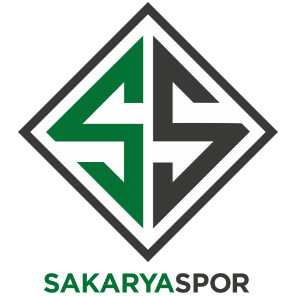
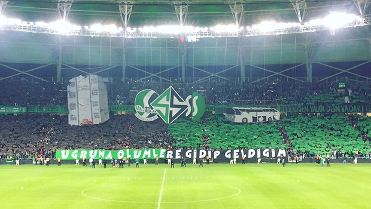
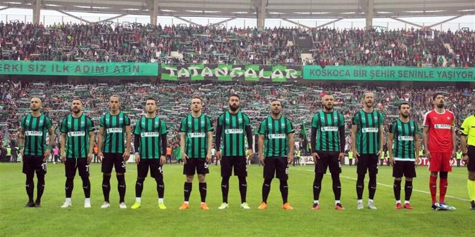

|



|
Sakaryaspor Kulübü'nün Kuruluş HikayesiSehrin 1900'lü yılların başında başlayıp, zaman içinde olgunlaşan köklü futbol geçmişinin, bir potada harmanlandığı, şehrin tüm farklı futbol değerlerinin güçlerini birleştirme iradesi gösterdiği 1965 yılında başlar. Dönemin gençlik ve spor bakanlığının, oluşturmak istediği Türkiye II. Milli Futbol Ligi projesi ve bunun ile ilgili olarak şehrin önde gelenlerinin girişim yapmasını talep etmesi, kuruluşun mihenk taşıdır. Dönemin futbol federasyonu başkanı Orhan Şeref Apak'ın girişimleri ve o dönem Adapazarı Şekerspor kaleciliğini yapan Fikret Aldinç'in Sakarya şehrinin futbol birikimine kefil olması ile süreç resmen başlamıştır.10 Mayıs 1965 tarihinde Sakarya'da bulunan köklü takımlardan İdman Yurdu başkanı Av.Ali Necdet Güven, Güneşspor kulüp başkanı Ethem Boran, Gençler Birliği kulüp başkanı Şevket Başak, Ada Genlik kulübü 2.başkanı Hamdi Uzel ve beraberindeki yöneticiler bir araya gelerek, şehrin tüm dinamiklerini ve güçlerini tek çatı altında toplanarak, şehrin tek profesyonel takımını kurulmasına dair görüşmeleri başlatmışlardır. Sakaryaspor'un temelleri bu görüşmelerde atılmıştır. Ethem Boran'ın çalışmalara liderlik etmesi ile kuruluş süreci hızlanmış, İdman Yurdu, Ada Gençlik, Gençler Birliği ve Güneşspor bünyesinden gelen 20 kişilik kurucu listesi, Sakaryaspor kulübünün kuruluş dilekçesini 17 Haziran 1965 yılında ilgili kurumlara sunarak, büyük fedakarlıklarla efsane'nin hikayesini yazmaya başlamışlardır. |